Sistema de visión para navegación autónoma de dron de ala fija
Maestría en Ciencias en Ingeniería de Cómputo — CIC-IPN
Ing. Gustavo Mandujano Rojas
16 de junio de 2026
Presenta: Ing. Gustavo Mandujano Rojas
Directores: Dr. Juan Humberto Sossa Azuela · Dr. Erik Zamora Gómez
Maestría en Ciencias en Ingeniería de Cómputo — CIC-IPN — 16 de junio de 2026
Agenda
- Introducción y motivación
- Definición del problema
- Hipótesis y justificación
- Objetivos general y específicos
- Metodología y adquisición de datos
- Arquitecturas evaluadas
- Modelo, entrada y salida
- Flujo de datos
- Plataforma aérea
- Parámetros de entrenamiento
- Resultados: error de predicción
- Evaluación en Raspberry Pi 5
- Patrones de atención
- Comparación de factores
- Propuesta intermedia
- Nivel de madurez tecnológica (TRL)
- Validación de hipótesis y conclusiones
- Aportaciones
- Trabajo a futuro
- Productos derivados
1. Introducción y motivación
La navegación autónoma de VANTs (Vehículos Aéreos No Tripulados) tradicionalmente depende de sistemas GPS e instrumentación costosa.
🛰 Independencia de GPS
Los entornos GPS-denied o degradados (bosques, cañones urbanos, interferencia) requieren alternativas económicas y robustas basadas en visión e inercia.
🛩️ Drones de ala fija
A diferencia de los multirrotores, vuelan a velocidades más altas y no pueden detenerse en el aire (hovering).
2. Definición del problema
Problema: Navegar de un punto A a un punto B en un entorno desconocido utilizando únicamente sensores de bajo costo (cámara monocromática + IMU) para predecir la maniobra futura del dron, para evitar colisiones sin depender de GPS o mapas precargados.
📖 Brecha en la literatura
Existe una falta de bancos de pruebas comparativos en hardware embebido real (como la Raspberry Pi 5) que evalúen arquitecturas de aprendizaje profundo para la predicción de estado inercial en drones de ala fija, equilibrando exactitud y latencia.
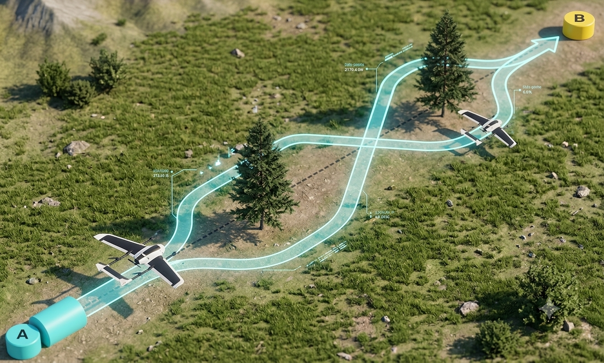
3. Hipótesis y justificación
Las arquitecturas de aprendizaje profundo que integran información visual e inercial mediante memoria temporal son capaces de predecir el estado inercial futuro de un dron de ala fija con exactitud y latencia de inferencia compatibles con su despliegue en sistemas embebidos de bajo costo.
La necesidad de una navegación autónoma segura en drones de ala fija se propone el uso de aprendizaje profundo y redes recurrentes para la detección y evasión de obstáculos.
4. Objetivo general
Evaluar comparativamente arquitecturas de aprendizaje profundo para la predicción del estado inercial futuro de un dron de ala fija a partir de secuencias visuales e inerciales sincronizadas, con restricciones de latencia y eficiencia computacional compatibles con su despliegue en sistemas embebidos de bajo costo.
4b. Objetivos específicos
- Entrenar arquitecturas: Implementar modelos CNN, RNN, de auto-atención e híbridos utilizando datos sincronizados de imagen e IMU (dataset UZH-FPV).
- Evaluar desempeño predictivo: Analizar la precisión mediante métricas de regresión (RMSE, MAE, \(R^2\)) a nivel global y por dimensión cinemática (rotación/traslación).
- Desplegar en hardware embebido: Exportar los modelos en ONNX a una Raspberry Pi 5 para evaluar su latencia, tamaño y estabilidad frente al presupuesto temporal de vuelo.
- Definir criterio de selección: Proponer un índice de eficiencia global (exactitud-latencia-tamaño) para determinar la arquitectura óptima para el módulo perceptual del dron.
5. Metodología y adquisición de datos
Se utilizó el Dataset UZH-FPV (Universidad de Zúrich), con datos reales de vuelos agresivos en primera persona.
- No son datos ideales: contienen ruido real de sensores, vibraciones del marco.
- Sincronización: la IMU (alta frecuencia) y las imágenes de la cámara (baja frecuencia) se sincronizaron mediante interpolación basada en timestamps.
- Preprocesamiento: imágenes redimensionadas a 128×128 en escala de grises para reducir el costo computacional sin perder características estructurales.
Tip
Se descartaron las simulaciones por no representar fielmente el ruido y las dinámicas aerodinámicas complejas del mundo real.
5b. Secuencia temporal de datos

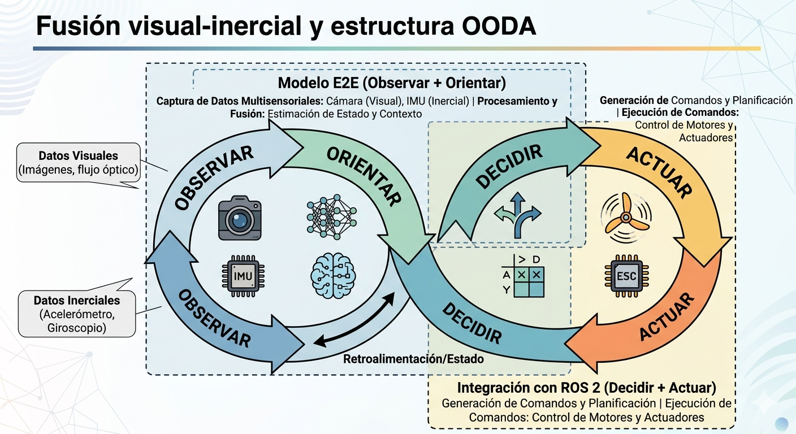
6. Arquitecturas evaluadas
Se evaluaron múltiples arquitecturas adaptadas para integrar una rama inercial temporal :
- PilotNetRegressor
- MLP y ConvMLP
- ConvLSTM
- DroneResNet18
- DroneMobileNetV3 (Small y Large)
- DroneNav-ConvLSTM
- DroneNavSA-ConvLSTM (Ligero y Completo)
Nota
Las variantes ligeras (small/ligero) reducen parámetros para priorizar la latencia en hardware embebido, mientras que las versiones completas (large/completo) buscan maximizar la precisión predictiva.
7. Modelo, entrada y salida
ENTRADA
- Secuencia de T = 10 imágenes monocromáticas 128×128 px (cámara FPV frontal)
- Historial IMU: T × 6 valores (ωx, ωy, ωz, ax, ay, az) sincronizados por timestamp
Modelo de aprendizaje profundo con memoria temporal.
➔
SALIDA ŷ ∈ ℝ⁶
ωx (roll) · ωy (pitch) · ωz (yaw)
ax · ay · az (aceleraciones)
Importante
⚠ El modelo predice el estado futuro (open-loop). No genera comandos de actuador directamente.
8. Flujo de Datos: Controlador de Vuelo y Computadora de Acompañamiento

9. Plataforma aérea
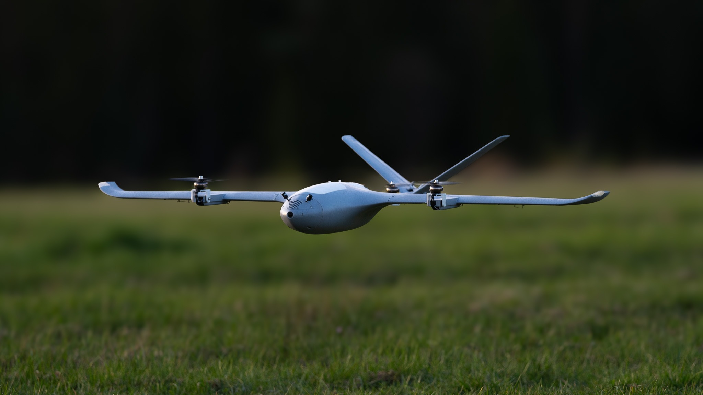
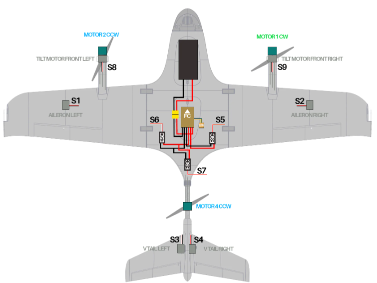
10. Parámetros de entrenamiento
- GPU NVIDIA RTX 4080 SUPER con 16 GB de memoria VRAM, 64 GB de RAM del sistema.
- Optimizador: Adam
- Tasa de aprendizaje: 1e-4
- Épocas: 500
| Métrica / Efecto | Tamaño Pequeño de lote (16,32) | Tamaño Grande de lote (256+) |
|---|---|---|
| Uso de Memoria VRAM | Bajo 📉 | Alto 📈 (Riesgo de OOM) |
| Tiempo por Época | Más lento (menos paralelismo) | Más rápido (mejor uso de GPU) |
| Dirección del Gradiente | Más ruidoso (menos muestras) | Más estable (más muestras) |
| Generalización (Test) | Suele ser mejor (escapa de mínimos locales) | Puede empeorar (riesgo de sobreajuste) |
11. Resultados: error de predicción
Métricas consolidadas de las arquitecturas más destacadas tras el entrenamiento.
| Arquitectura | RMSE General | MAE General | R² Score | Tamaño |
|---|---|---|---|---|
| PilotNetRegressor | 0.3754 | 0.2216 | 0.8507 | 53.36 MB |
| DroneMobileNetV3_Large | 0.3717 | 0.2144 | 0.8534 | 19.68 MB |
| DroneResNet18 | 0.3815 | 0.2151 | 0.8459 | 49.21 MB |
| DroneNavSA-ConvLSTM_ligero | 0.3748 | 0.2300 | 0.8514 | 6.88 MB |
| DroneNavSA-ConvLSTM_completo | 0.3774 | 0.2338 | 0.8498 | 6.77 MB |
* La métrica general reduce los errores de las 6 salidas a un único valor mediante una media ponderada que normaliza las magnitudes físicas dispares entre giroscopio y acelerómetro.
11b. Análisis de errores por dimensión
11c. Análisis de errores por dimensión
¿Por qué las aceleraciones (a) presentan mayor error que las velocidades angulares (ω)?
Las velocidades angulares derivan directamente de la dinámica de rotación visible en los flujos ópticos de la cámara. En cambio, las aceleraciones lineales están fuertemente contaminadas por:
- La gravedad (el vector g se mezcla con la aceleración pura del cuerpo según la orientación).
- Vibraciones de alta frecuencia de motor y hélices propagadas al marco (frame).
- Dinámica aerodinámica (ráfagas de viento, sustentación variable).
11c. Comparación Multidimensional
12. Evaluación en Raspberry Pi 5
Despliegue de los modelos ONNX en una Raspberry Pi 5 (8 GB RAM), operando sin aceleradores dedicados.
| Modelo | Lat. Media (ms) | Lat. P95 (ms) | FPS | Viabilidad (< 100 ms) |
|---|---|---|---|---|
| PilotNetRegressor | 32.32 | 32.48 | 30.94 | ✅ Excelente |
| DroneMobileNetV3_Small | 24.76 | 25.15 | 40.40 | ✅ Excelente |
| DroneMobileNetV3_Large | 99.84 | 100.53 | 10.02 | ⚠️ Límite operacional |
| DroneResNet18 | 293.87 | 312.76 | 3.40 | ❌ Inviable |
* Degradación del error tras conversión a ONNX cuantificado: < 10⁻⁵ (despreciable).
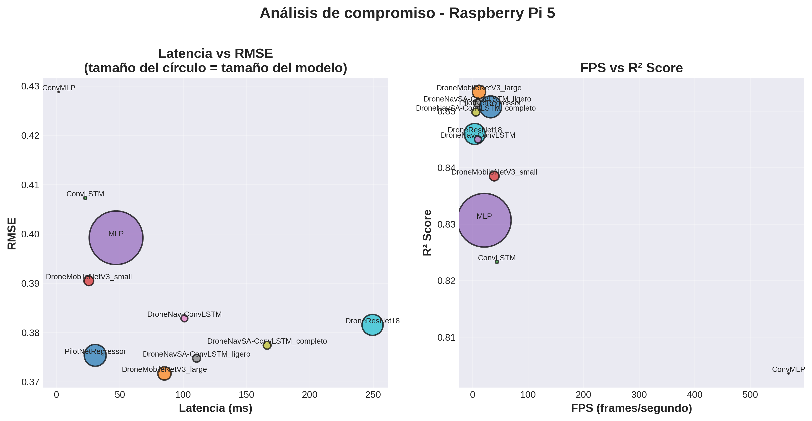
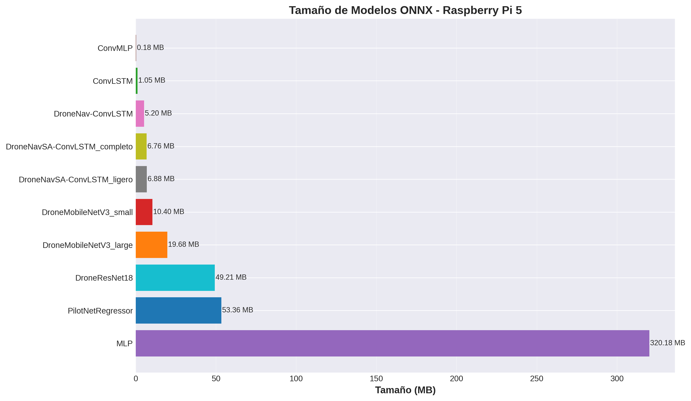
12b. Criterio de eficiencia compuesta
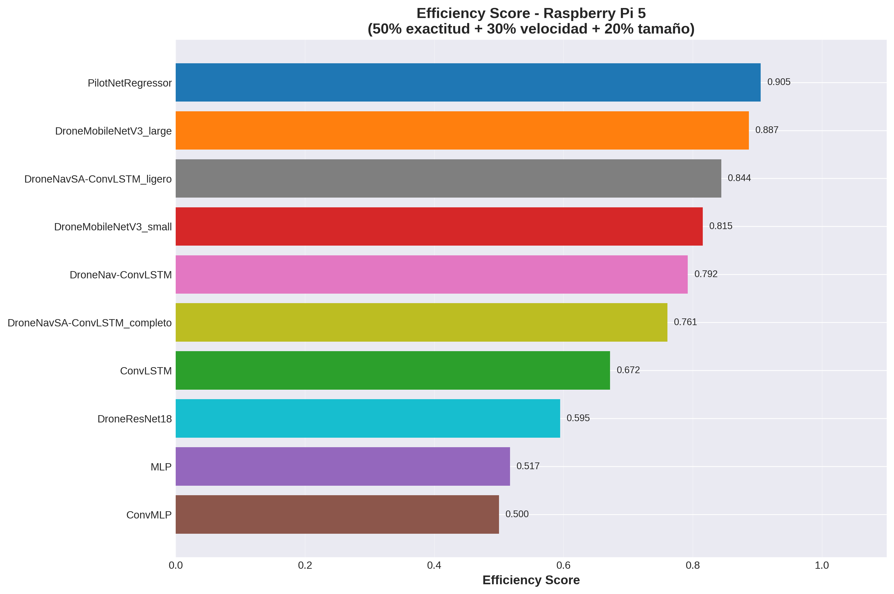
13. Patrones de atención
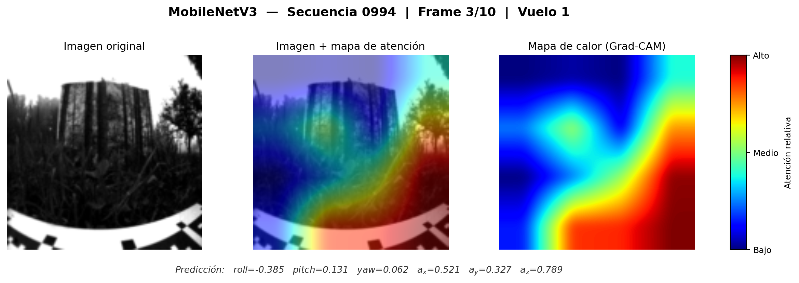
13b. Patrones de atención
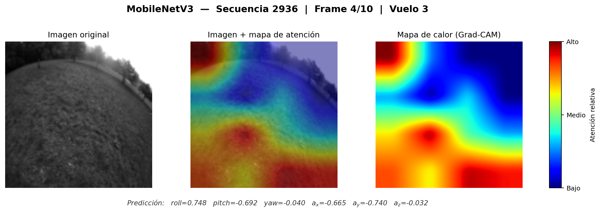
13c. Patrones de atención
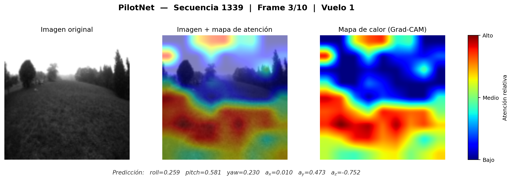
13d. Patrones de atención
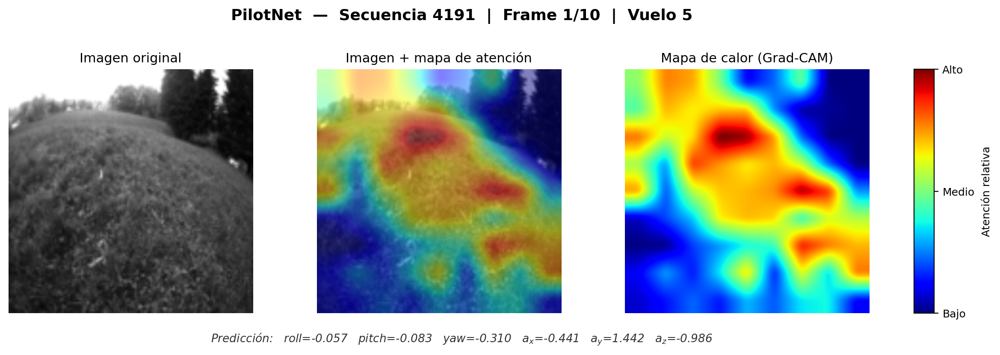
14. Comparación de factores
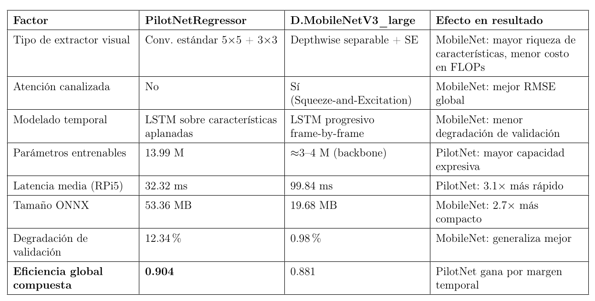
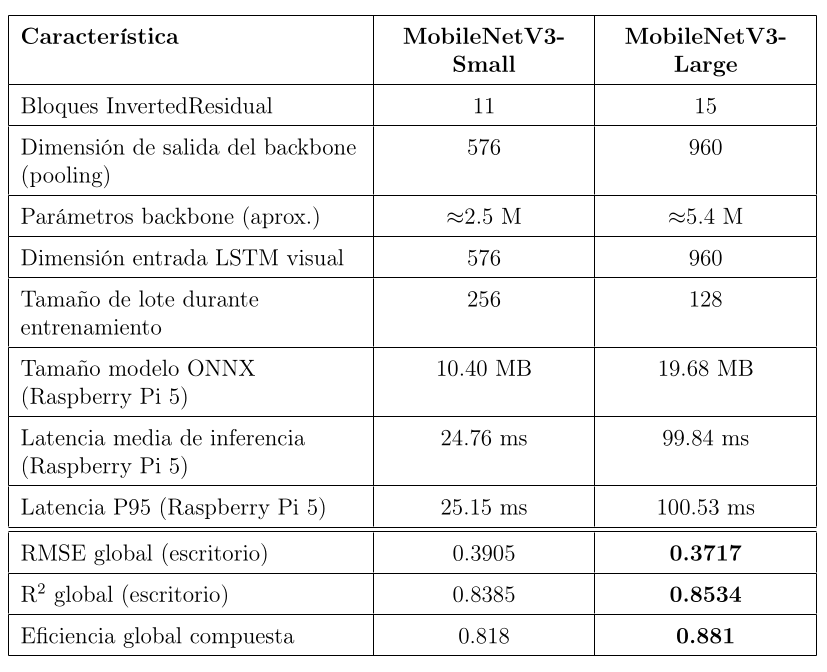
15. Propuesta intermedia
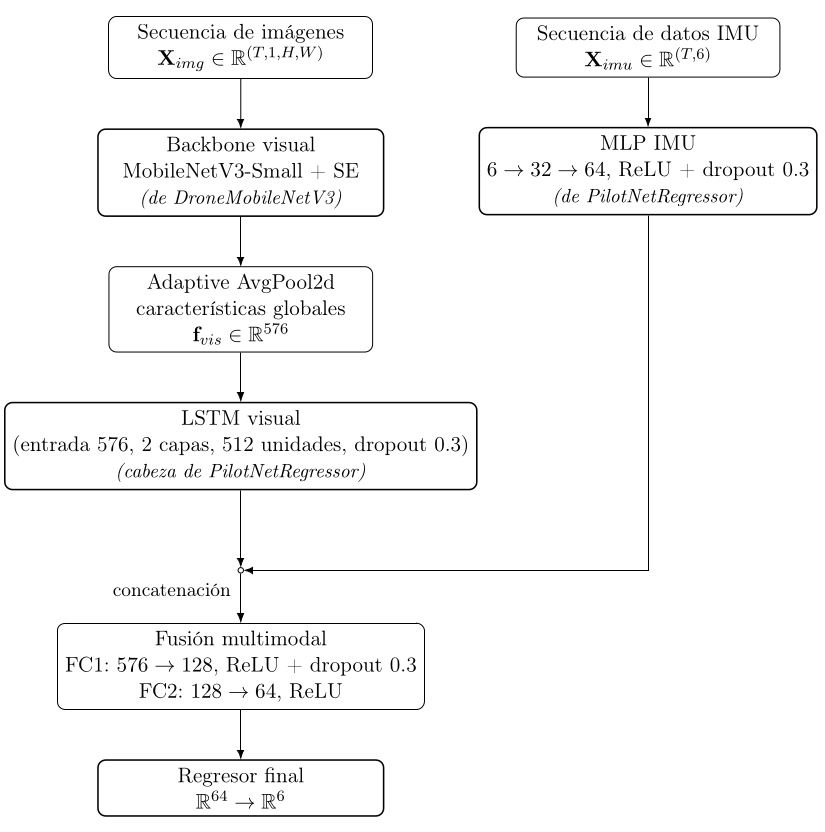
16. Nivel de madurez tecnológica (TRL)
TRL 4 (parcial) ✓
Validación en laboratorio
- 10 arquitecturas entrenadas con datos reales (UZH-FPV)
- Métricas globales y por dimensión consolidadas
- Conversión ONNX verificada
TRL 5 (parcial) ✓
Entorno relevante
- Despliegue real en Raspberry Pi 5
- PilotNet validada con latencia < 100 ms (P95 = 32.48 ms)
- Pendiente: integración en lazo MAVLink
TRL 6 → Futuro
Demostración
- Integración en lazo cerrado de control
- Vuelo real sobre dron de ala fija
- Dataset propio en plataforma objetivo
17. Validación de hipótesis y conclusiones
La hipótesis se planteó con carácter exploratorio: evaluar la viabilidad de arquitecturas con memoria temporal como módulo perceptual desplegable en hardware embebido de bajo costo.
- Viabilidad de la familia: las arquitecturas con memoria temporal son ejecutables en el hardware objetivo. ConvLSTM operó dentro del presupuesto de latencia 28.46 ms.
- Restricción no satisfecha simultáneamente: ninguna configuración con memoria temporal alcanzó de forma conjunta los tres criterios (exactitud suficiente + latencia ≤ 100 ms + estabilidad). El mayor compromiso forzó a elegir entre exactitud y latencia.
- Mejor compromiso operativo: lo ofrecieron arquitecturas feedforward más simples. PilotNetRegressor en Raspberry Pi 5 32.32 ms, DroneMobileNetV3_large en desktop.
18. Aportaciones
El aporte central no es identificar un modelo ganador, sino caracterizar el espacio de compromisos entre exactitud, latencia y estabilidad en latencia para despliegue embebido.
- Propuesta de un marco experimental integral.
- Comparación sistemática de múltiples arquitecturas.
- Análisis detallado de fenómenos asociados a la discretización y sincronización de los datos de referencia de los sensores.
- Evaluación realista en una plataforma embebida, RPI 5.
- Introducción de un criterio de desempeño compuesto.
19. Trabajo a futuro
- Recolección de conjunto del datos propio en dron de ala fija. Reducir discrepancias entre el entorno de entrenamiento y el sistema objetivo.
- Validación en vuelo real, modelo integrado en el lazo de control. (TRL 6)
- Mejora de modelos, modelos predictivos multi-paso, arquitecturas híbridas que integren atención temporal y fusión explícita de información visual- inercial.
- Optimización para despliegue, uso de aceleradores e integración completa con ROS 2.
20. Productos derivados
- Repositorio de código abierto con scripts de entrenamiento, evaluación y despliegue.
https://github.com/GusRojas/Evaluation-and-Comparison-of-Autonomous-Navigation-Models
https://github.com/GusRojas/defensa
- Participación en el Congreso Internacional de Inteligencia Artificial en la H. Cámara de Diputados, 9 y 10 de Abril de 2025, Ciudad de México.
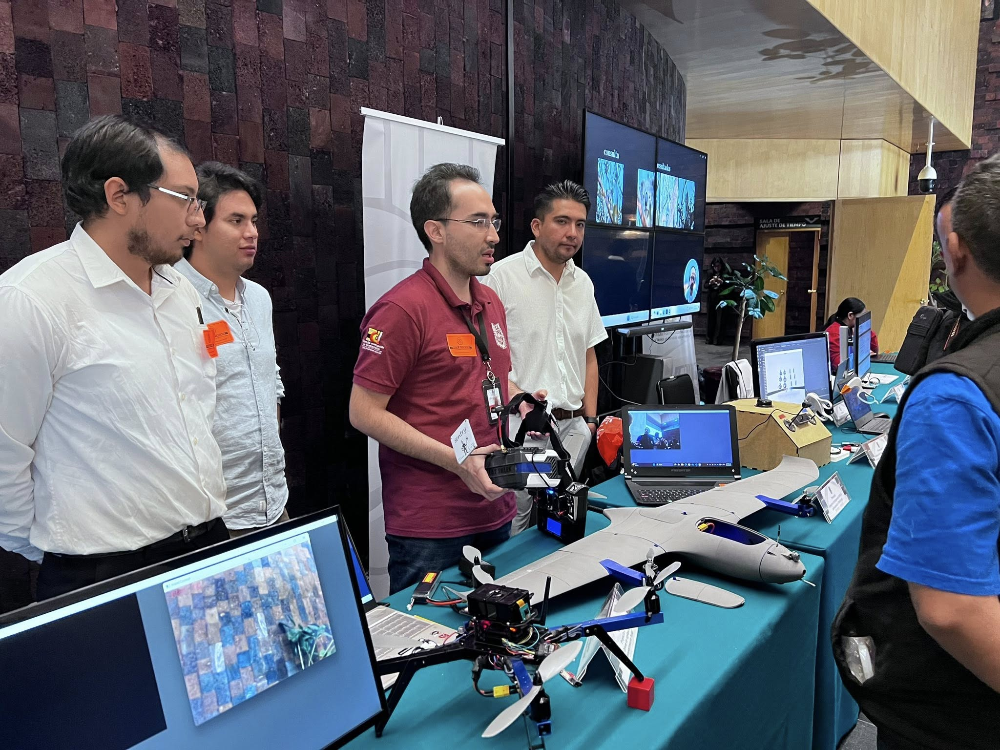
¡Gracias por su atención!
Sección de preguntas